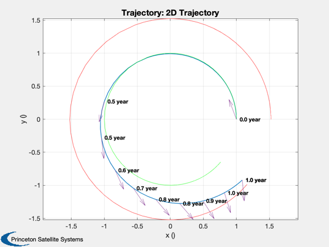
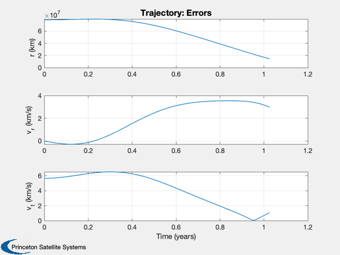
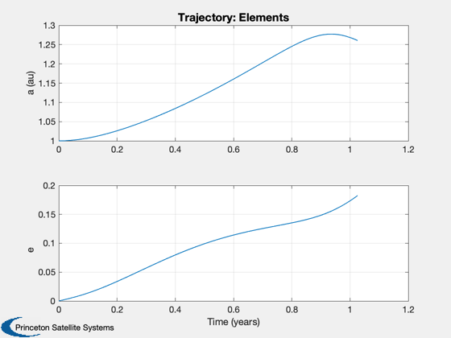

Demonstrate additional methods of trajectory optimization
Demonstrate genetic algorithm and simulated annealing.
See also Constant, Planets, TrajectoryOptimization
Contents
%-------------------------------------------------------------------------- % Copyright (c) 2005 Princeton Satellite Systems, Inc. % All rights reserved. %-------------------------------------------------------------------------- % Since version 7. %-------------------------------------------------------------------------- disp('This demo takes several minutes to run.') d = TrajectoryOptimization; d.d = CostLowThrust2D( 'get' ); % Spacecraft properties %---------------------- m0 = 10000*Constant('lb force to kg'); % kg d.d.thrust = 0.0005; % N d.d.mDot = 6.7727e-5; % thrust/uE % Target planet %-------------- [name,a] = Planets('rad',4); % Mars % Heliocentric system %--------------------- d.d.mu = Constant('mu sun'); aU = Constant('au'); aF = a(1)*aU; d.d.rF = aF; % Dynamics function %------------------ d.d.rhsFun = @FLowThrust2D; d.d.plotFun = @Plot2DTrajectory; % Simplex parameters %------------------- d.d.stateTol = 1e-6; d.d.funTol = 1e-6; d.d.nIts = 2500; % Cost function called by simplex %-------------------------------- d.d.costFun = @CostLowThrust2D; % Initial costate guess %---------------------- d.d.lambda0 = [0;-1;1]*1e5; %Plot2DTrajectory(d.d.lambda0,d.d) % Boundary conditions, initial and final state % [r;rDot;v;m] %--------------------------------------------- v0 = VOrbit(aU,aU,d.d.mu); vF = VOrbit(aF,aF,d.d.mu); d.d.x0 = [aU;0;v0;m0]; d.d.xF = [d.d.rF;0;vF]; % Integration (ode113) parameters %-------------------------------- d.d.data.absTol = 1e-10; d.d.data.relTol = 2.5e-8; d.d.data.maxStep = 0.1; % ode113 will never take a step bigger than this % fraction of the end time d.d.tEnd = 1000*86400; % (s) % Weights for the costates and error in the mass equation %-------------------------------------------------------- d.d.errorScale = [1; 3e6; 1e7; 1e-2]; %return;
This demo takes several minutes to run.
2. Genetic algorithm
These functions are wrappers for the third-party GAOT toolbox. Currenty running but returning warnings.
tic d.method = 'genetic algorithm'; % The number of individuals %-------------------------- d.d.nI = 40; % The number of generations %-------------------------- d.d.nG = 40; % The bounds on the costate %-------------------------- d.d.bounds = [-1 1]; % The selection function %----------------------- d.d.fncSelect = 'FractionalSelection'; d.d.optSelect = 0.5; % The crossover function %----------------------- d.d.fncXOver = 'SingleCrossover'; d.d.optXOver = [10 0.9]; % The mutation function %---------------------- d.d.fncMutate = 'BoundedMutation'; d.d.optMutate = [10 0.8 0.8]; % Optimize %--------- warning('OFF', 'MATLAB:ode113:IntegrationTolNotMet') TrajectoryOptimization( d ); toc return; %------------------------------------------------------------------
Case 1: Method: genetic algorithm
Generation 1 Generation 2 Generation 3 Generation 4 Generation 5
Generation 6 Generation 7 Generation 8 Generation 9 Generation 10
Generation 11 Generation 12 Generation 13 Generation 14 Generation 15
Generation 16 Generation 17 Generation 18 Generation 19 Generation 20
Generation 21 Generation 22 Generation 23 Generation 24 Generation 25
Generation 26 Generation 27 Generation 28 Generation 29 Generation 30
Generation 31 Generation 32 Generation 33 Generation 34 Generation 35
Generation 36 Generation 37 Generation 38 Generation 39 Generation 40
Radial position error = 14584409.7075 (km)
Radial velocity error = 2.9755 (km/s)
Tangential velocity error = -1.0764 (km/s)
Time of minimum error = 1.0262 year
Elapsed time is 82.578358 seconds.
   
3. Try simulated annealing
%------------------------------------------------------------------ d.method = 'simulated annealing'; % Error tolerance for termination %-------------------------------- d.d.eps = 1e-4; % The temperature reduction factor %--------------------------------- d.d.rT = 0.85; % The suggested value % Number of cycles %----------------- d.d.nS = 20; % Suggested value % Number of iterations before temperature reduction %-------------------------------------------------- d.d.nT = 100; % Should be max( 100, 5*n ) % Maximum number of evaluations allowed %-------------------------------------- d.d.maxEval = 100000; % Lower bound %------------ d.d.lB = -1e25*ones(3,1); % Upper bound %------------ d.d.uB = 1e25*ones(3,1); % Value that controls the step length adjustment %----------------------------------------------- d.d.c = 2*ones(3,1); % Number of final function evaluations to determine termination %-------------------------------------------------------------- d.d.nEPS = 4; % Starting temperature %--------------------- d.d.t = 5; % 0 means find a minimum %----------------------- d.d.max = 0; % Optimize %--------- TrajectoryOptimization( d ); %--------------------------------------